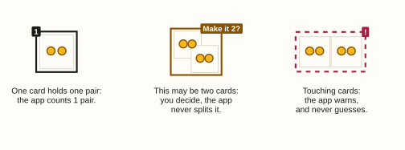
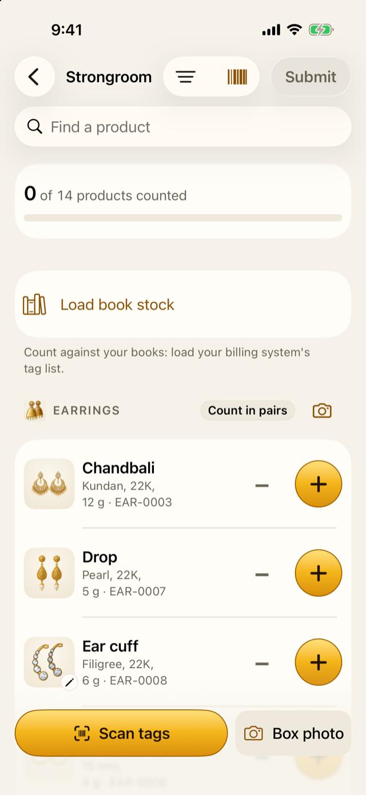
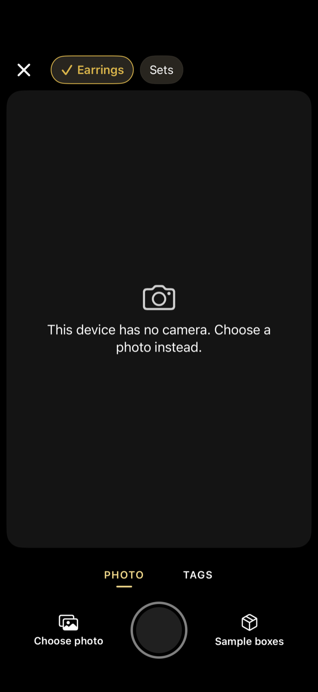
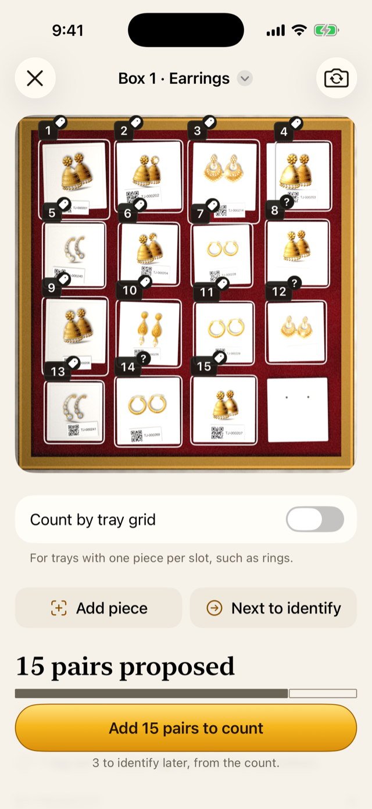
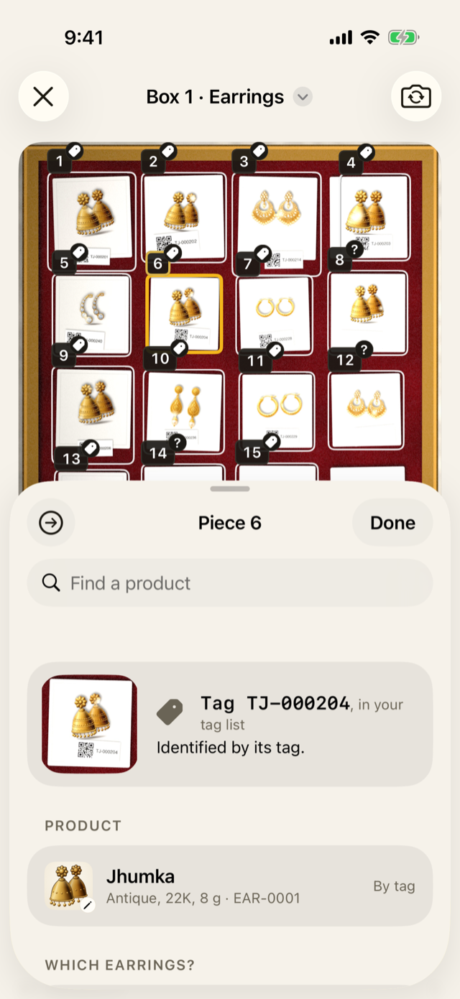
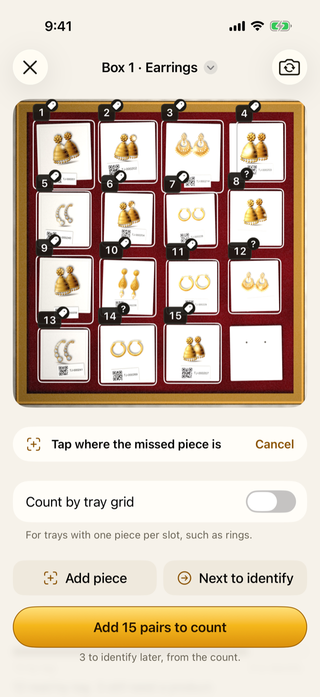
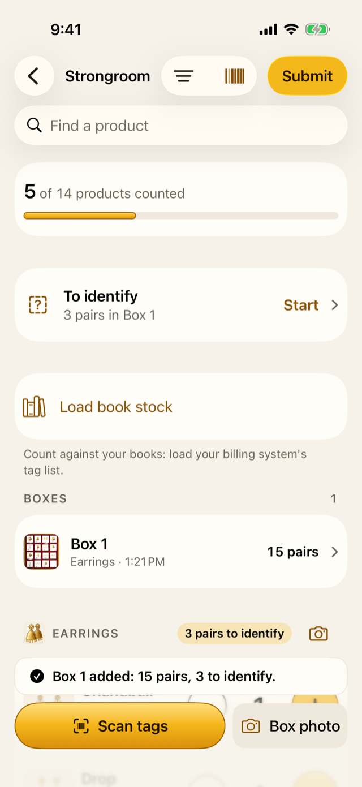
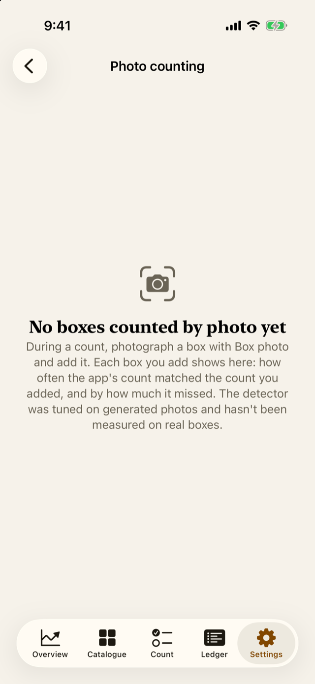
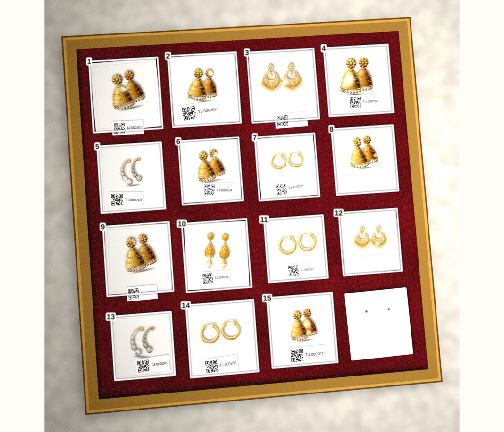

9 Counting boxes: tags and photos
For counters
- The two ways to count a whole box at once: scanning its tags, or taking a photo.
- How to check a box before adding it to the count.
- What the app never does on its own, and why.
9.1 The idea
Counting a box of 15 pairs one tap at a time works, but it’s slow. Jholok can count a whole box at once, in one of two ways:
- Scan tags. If each piece carries its own piece tag (Chapter 5), move the camera over the box. Each tag read counts its piece, once. This is the most reliable way, which is why Scan tags is the gold button.
- Box photo. Photograph the box. Jholok finds the box, straightens it, finds each card, reads any tags it can see, and suggests a product for the rest from their pictures.
A box holds many designs of one type, each pair or set on its own card or in its own slot. So the app counts cards, not loose pieces: one card is one pair, or one set.
Either way, the result is a proposal. The review says “15 pairs proposed”: nothing reaches the count until you’ve checked it and tapped Add.
ImportantHow well box photos work hasn’t been measured yet
The app’s photo counting was built and tuned on drawn example boxes, like the ones in this guide, not on photos of real boxes. How often it gets a real shop’s boxes right isn’t known yet. That’s why every box is checked before it’s added, and why the app never adds a box by itself.
9.2 In the app
On the counting screen, the two buttons at the bottom open the camera: Scan tags and Box photo. The camera button beside each type’s name photographs a box of that type.

Take a box photo
- Tap Box photo. If the count covers several types, choose the box’s type at the top.
- Hold the phone flat above the box, with the whole box in the frame. If it’s tilted, the app says “Hold the phone flat”. Tags it can read are ticked as you frame.
- Tap the shutter. The app checks the photo, and if it’s blurred, too dark, too bright or tilted, offers Retake or Use anyway.
- It then finds the pieces, reads the tags and matches pictures, and opens the box’s review.

You can also Choose photo to use one you took earlier.
Check the box
The review shows the photo with every piece outlined and numbered. A small mark on each outline says how its product was found:
- a tag: read from its tag;
- sparkles: suggested by its picture, waiting for you to check it;
- a question mark: still needs a product;
- no mark: confirmed.
A dashed outline is a piece left out, and a red ! is a piece that may be two, or was found only by its tag.

Tap any piece to open it. The sheet shows its tag, its product, and the products it may be, with a search at the top. From there:
- choose the product, or accept the suggested one;
- Make it 2, on a piece marked with a red ! as maybe two. If one outline holds two pieces and isn’t marked, use Add piece;
- Not a piece, when the outline isn’t jewellery (an empty card, a label). You can undo it until your next change;
- Not in the catalogue, for a design the shop has no product for;
- Identify later, on a picture match you can’t check now: it clears the match, and the piece waits in the To identify queue (Chapter 10). A piece with no product goes there anyway.

If the app missed a piece, tap Add piece, then tap where it is. For a tray with one piece per slot, such as rings, turn on Count by tray grid, set the rows and columns, and drag the corners to fit the tray.

When everything looks right, tap Add 15 pairs to count. Any piece still without a product goes to the To identify queue. A piece whose picture match you haven’t checked keeps the box from being added: accept it, change it, or choose Identify later first.
If the box was counted already
If a box photo shares half or more of its tags with a box already added, or an untagged box looks just like one already added, the app asks first: “Is this Box 2 again?” If it is, tap Cancel, or its pieces would be counted twice.
After adding
The count lists the box under Boxes, and its pieces add to each product’s count, together with anything counted by hand. Tap a box to open its review again and update it, or swipe it to Remove it: its pieces come off the count, and its photo is deleted.

9.3 Why it works this way
- Tags first. A piece tag names one piece exactly, so scanning can’t mistake one design for another.
- A tag counts once per count. Whether it’s scanned twice, or appears in a photo and a scan, the piece is counted once.
- Cards, not loose pieces, and never a guessed split. Earrings lie close together and sets are large; guessing would be wrong too often. Where one outline may hold two, the app asks; where pieces touch, it warns.
- A proposal, never automatic. The app can’t yet show it counts real boxes well, so a person checks every box. Settings → Photo counting keeps score.
- Not a piece is kept, left out. What the app got wrong is exactly what a better version needs to learn from, so the outline stays with the box, marked, and is never counted.
- Picture matching never looks at stock. It compares the piece’s picture with product photos of the box’s type only.
9.4 How it works
Every added box keeps its photo, the straightened box, and every piece you confirmed. These are kept so that, in future, the app can learn from your real boxes. The owner can export them from Settings → Export → Box photos and labels, which asks the owner to confirm each time.
Settings → Photo counting compares the app’s count of each box with the count you added after checking it. Those numbers lean towards the app, because you saw its proposal first, so they aren’t an independent measure.

9.5 Try it
This is the demo’s tagged box of earrings, with each piece numbered as in its review.

Its 15 pieces carry tags, but a photo of it doesn’t read them all:
12 pairs are identified by their tags. The tag on one pair, TJ-000269, isn’t among the 68 tags in the demo’s tag list: that pair arrived after the list was exported, so the review asks to link it. Two tags can’t be read. That leaves 3 pairs to identify, as the review says: “3 to identify later, from the count.”
The empty card in the bottom corner holds no jewellery. If the app had outlined it, you would tap it and choose Not a piece.
Question. You scan a box and the list shows “Already counted in Box 2” for every tag. What happened?
TipAnswer
This box was already counted, as Box 2, earlier in the count. Its pieces add nothing, so nothing is counted twice. Don’t add the scan.
- Scan tags when pieces have tags; take a box photo when they don’t.
- Every box is a proposal: check it, then Add. Nothing is added by itself.
- The app counts cards, asks when one may be two, and never splits a piece.
- A tag counts once per count. If the app asks whether a box was counted already, believe it until you’ve checked.
- How well box photos work on real boxes hasn’t been measured yet.